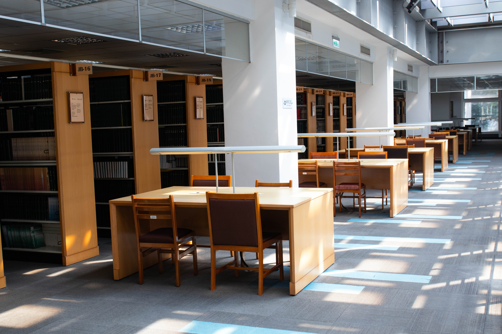

第七站：現期期刊區．曬刊好福利

歡迎來到期刊的主場——這裡彙集了最新的中西文期刊，從時事觀點到設計靈感，一字排開，宛如一場小型國際知識博覽會，等你來一探究竟。
最讚的是每年舉辦的「曬刊活動」更是讀者的最愛：圖書館大方出清，讓你打包回家，冷門學術搖身一變，成為獨特居家擺設或創意拼貼素材，絕對文青、毫不浪費。
雖然期刊限館內閱覽，但那種沉浸式閱讀的感覺，真的讓人捨不得離開。
不過現在，是時候找回童年裡的那份溫柔與想像——你上次讀繪本是什麼時候？不如我們去找回童心吧。

歡迎來到期刊的主場——這裡彙集了最新的中西文期刊，從時事觀點到設計靈感，一字排開，宛如一場小型國際知識博覽會，等你來一探究竟。
最讚的是每年舉辦的「曬刊活動」更是讀者的最愛：圖書館大方出清，讓你打包回家，冷門學術搖身一變，成為獨特居家擺設或創意拼貼素材，絕對文青、毫不浪費。
雖然期刊限館內閱覽，但那種沉浸式閱讀的感覺，真的讓人捨不得離開。
不過現在，是時候找回童年裡的那份溫柔與想像——你上次讀繪本是什麼時候？不如我們去找回童心吧。